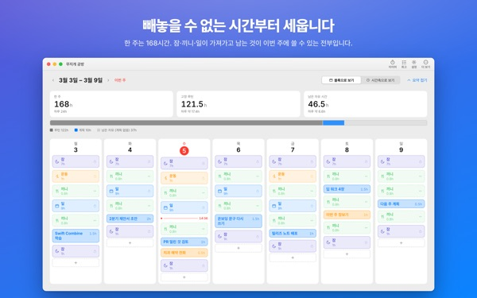
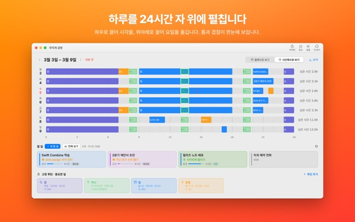
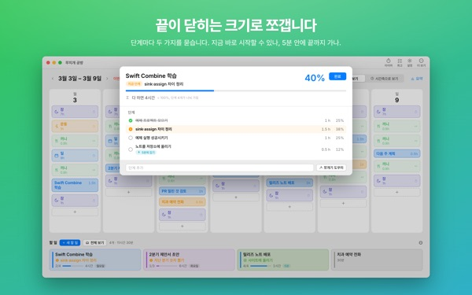
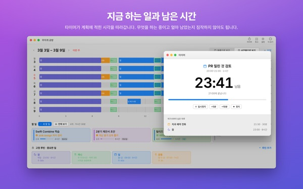
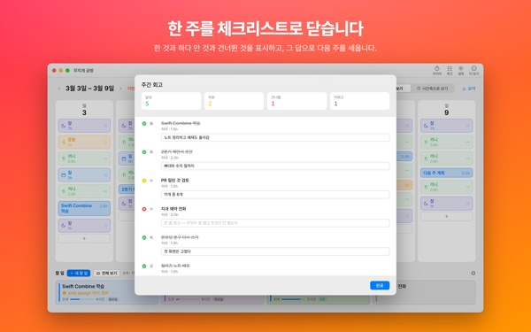

이번 주에 정말
다 들어갈까요?
무지개 공방은 한 주를 요일과 시간대로 펼치는 맥 앱입니다. 잠, 끼니, 일처럼 빼놓을 수 없는 시간을 먼저 깔고, 남은 자리에 할 일을 끌어다 놓으며 무엇이 들어가는지 눈으로 확인합니다.
계획, 루틴, 할 일, 회고, 타이머, 캘린더 가져오기는 무료입니다.

직접 한 주를 짜 보세요
앱이 처음에 제안하는 루틴 네 가지를 깔아 두었습니다. 루틴을 끄고 켜 보고, 할 일을 요일에 놓아 보세요.
할 일 목록은 길어지는데, 한 주는 늘 모자라지 않나요?
목록만 봐서는 이번 주에 그 일들이 다 들어가는지 알 수 없습니다. 잠과 끼니와 출근이 이미 가져간 시간을 빼고 나면 남는 건 생각보다 적습니다. 무지개 공방은 그 남은 시간을 숫자와 칸으로 보여 주고, 할 일을 실제 자리에 놓아 보게 합니다.
하루를 24시간 자 위에서 봅니다
시간축 보기는 하루를 24시간 자 위에 펼칩니다. 빈틈과 겹침이 한눈에 보이고, 겹친 일정을 어떻게 세울지 고를 수 있습니다.
맥 캘린더의 회의와 약속은 두 번 적지 않고 가져옵니다. 원하면 계획을 앱이 만든 무지개 공방 캘린더에 적어 아이폰 캘린더에서도 봅니다. 다른 캘린더는 고치지 않습니다.

끝이 닫히는 크기로 쪼갭니다
큰 일이 멈추는 것은 대개 무언가가 아직 막고 있어서입니다. 앱은 단계마다 두 가지를 묻습니다. 준비 없이 바로 시작할 수 있는지, 5분 안에 끝나는지.
둘 다 그렇다면 조각이라 5분이 빌 때마다 집어 들면 됩니다. 나머지는 따로 떼어 둔 시간이 필요합니다. 앱의 판단이 틀리면 바꾸면 됩니다.

지금 하는 일과 남은 시간
시작 시각이 되면 계획이 진행 중으로 바뀌고, 시간이 지나면 끝냈는지 묻습니다. 타이머는 시간표를 따라 셉니다.
지금 타이머 위젯은 앱을 열지 않아도 지금 하는 일과 남은 시간을 보여 줍니다.

한 주를 체크리스트로 닫습니다
주간 회고는 요일마다 카드 한 장입니다. 한 것, 반쯤 한 것, 건너뛴 것을 찍고 그 답으로 다음 주를 짭니다.
같은 iCloud 계정이면 할 일이 아이폰 앱 욕망의 무지개와 오가서, 맥에서 짠 오늘 계획을 밖에서도 확인합니다.

시작은 세 단계면 됩니다
- 1
빼놓을 수 없는 시간을 세웁니다
잠, 끼니, 일처럼 매주 돌아오는 시간을 루틴으로 깝니다. 앱은 아무것도 미리 깔지 않습니다.
- 2
할 일을 적습니다
화면 아래 할 일에 한 줄씩 적습니다. 언제 할지는 아직 정하지 않아도 됩니다.
- 3
요일로 끌어다 놓습니다
요일 칸에 떨어뜨리면 계획이 됩니다. 날짜가 틀어지면 다른 요일이나 목록으로 다시 끌면 됩니다.
앱이 제안하는 루틴으로 셈하면
- 한 주
- 168시간
- 잠 · 매일 8시간
- 56시간
- 끼니 · 하루 세 번
- 17.5시간
- 일 · 학교 · 평일 9시간
- 45시간
- 운동 · 월·수·금 1시간
- 3시간
- 이번 주에 실제로 쓸 수 있는 시간
- 46.5시간
제안은 예시일 뿐입니다. 루틴은 내 생활에 맞게 고르고 고칩니다. 휴가나 출장으로 일이 없는 날은 그날만 빼면 됩니다.
이번 주를 사는 데 필요한 것은 무료입니다
무료
- 주간·일간 계획과 루틴, 할 일 (개수 제한 없음)
- 시간축 보기와 할 일 쪼개기
- 주간 회고와 회고를 글로 복사하기
- 타이머와 지금 타이머 위젯
- 캘린더에서 가져오기
- 아이폰 욕망의 무지개와 오가기
- 회고 추세 지난 2주
Plus · Pro
- Plus: 회고 추세 8주, 잘 되는 요일과 시간대
- Plus: 계획 대비 실제 시간
- Plus: 잘 굴러간 주의 계획을 이번 주에 한 번에 깔기
- Pro: Plus의 모든 것과 내 일정을 보기 전용 링크로 공유
- Pro: 한 번 사면 아이폰 앱도 함께 Pro로 열립니다
칸마다 연 구독 또는 한 번 결제하는 평생 이용권
가격은 앱과 App Store에서 확인하세요. 연 구독은 기간이 끝나기 24시간 전까지 해지하지 않으면 자동으로 갱신됩니다. 아이폰에서 산 Pro도 같은 iCloud 계정의 맥에서 열립니다.
자주 묻는 질문
iCloud 로그인이 꼭 필요한가요?
혼자 맥에서만 쓸 때는 필요 없습니다. 아이폰과 이어 보려면, 그리고 일정 공유를 쓰려면 필요합니다.
앱이 내 캘린더를 고치나요?
원래 있던 캘린더는 고치지 않습니다. 캘린더에서 가져오기는 고른 캘린더를 읽기만 합니다. '계획을 무지개 공방 캘린더에 쓰기'를 켜면 앱이 무지개 공방 캘린더를 따로 만들어 거기에만 적습니다. 그 캘린더는 캘린더 앱에서 언제든 지울 수 있습니다.
맥에서 적은 할 일이 아이폰에 안 보여요.
두 기기가 같은 iCloud 계정에 로그인되어 있는지, 아이폰에 욕망의 무지개가 설치되어 있는지 확인해 주세요. 동기화는 iCloud를 거치므로 몇 분 걸릴 수 있습니다.
창을 닫으면 앱이 꺼지나요?
아니요. 창을 닫아도 앱은 남아 있고, 상단 메뉴의 윈도우에서 다시 열 수 있습니다. Dock 아이콘을 눌러도 됩니다.
업데이트하면 적어 둔 할 일과 계획은 어떻게 되나요?
그대로 남습니다. 업데이트가 적어 둔 내용을 바꾸거나 지우지 않습니다.
화면 언어를 바꾸고 싶어요.
설정 맨 위의 Language · 언어 · 語言에서 고르면 앱이 다시 열리며 바뀝니다. 23개 언어를 쓸 수 있고, 직접 적은 루틴 이름과 할 일은 번역되지 않습니다.
맥을 바꿨더니 Plus나 Pro가 풀렸어요.
같은 Apple 계정으로 로그인한 뒤 설정의 구매 복원을 누르세요. 해지는 App Store의 계정 설정에서 합니다.
적은 내용은 어디에 저장되나요?
계정도 회원가입도 없고, 계획을 담아 두는 개발자 서버도 없습니다. 적은 내용은 내 기기와 내 iCloud에만 있습니다. 적은 내용이 들어가지 않는 익명 사용 통계를 보내며, 설정의 '익명 사용 통계 보내기'로 끌 수 있습니다.
쓰다가 막히거나 이상한 점이 있으면 mizzking75@gmail.com로 알려 주세요. 앱 안 설정에도 문의 항목이 있습니다.